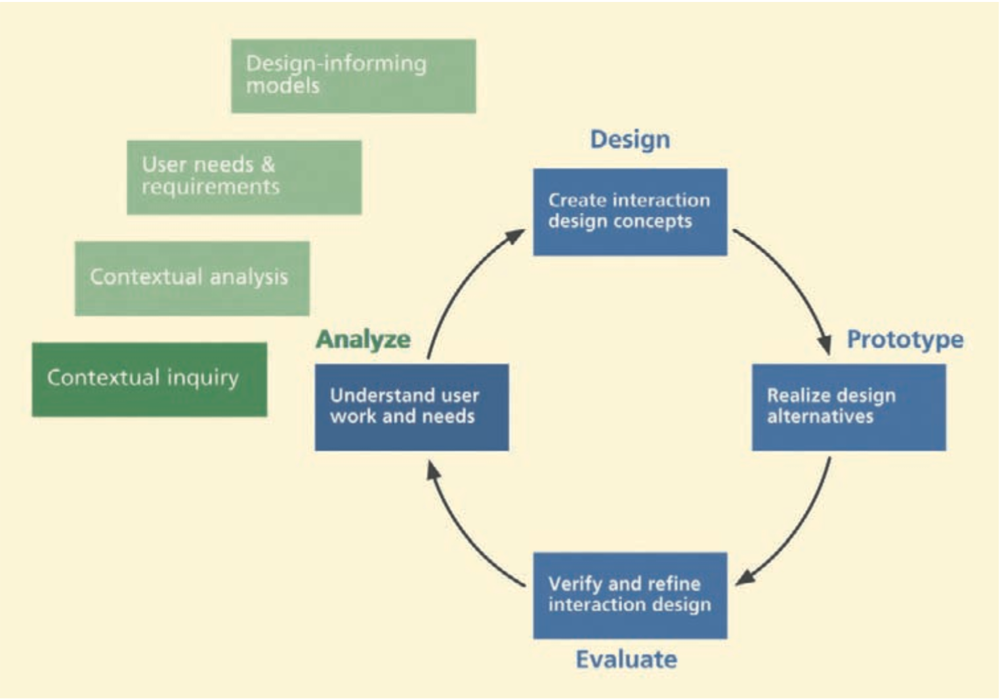
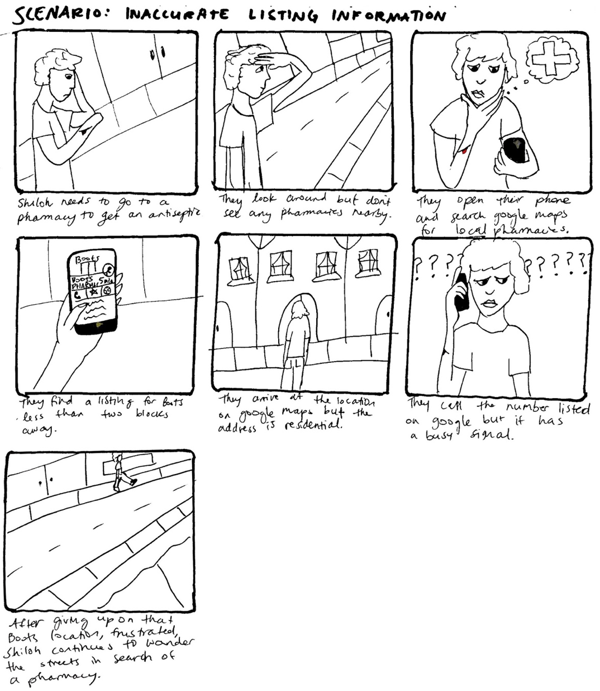
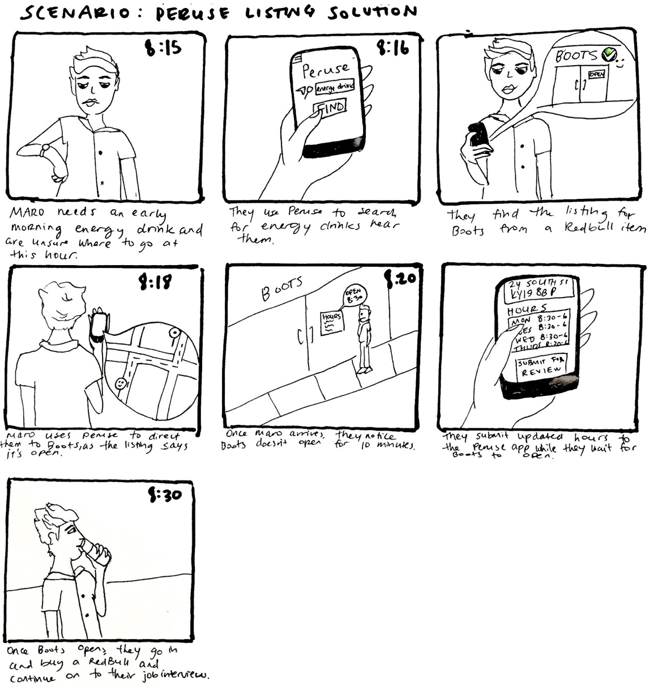
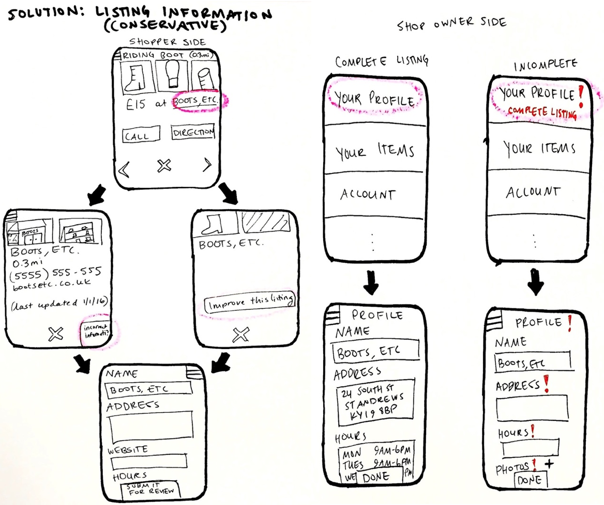
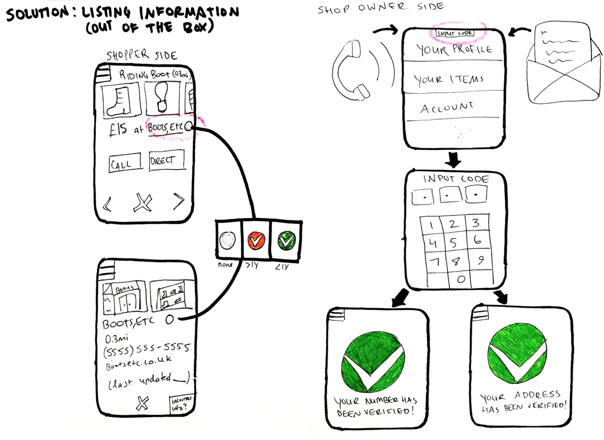
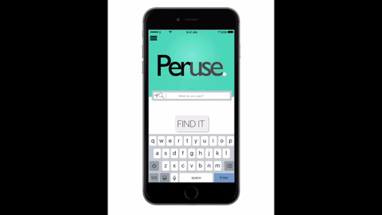

As part of a User-Centred Design module, I was teamed up with three colleagues to research and design an app called Peruse. We were matched with a client wishing to implement the app concept and listened to their vision for the app while also factoring in our own research. The app, Peruse, is a two-sided (for shoppers and shop owners), location-based product search engine that matches shoppers with products near them. The products are listed by the local businesses (shop owners).
Role
As this was a group project, all members collaborated on the research and analysis evenly. Once the design stages started, the team split between the two sides of the app (shopper and shop owner), with me and another member focusing on the shopper-facing app. This involved sketching ideas and user journeys, creating elements in Sketch, protoyping screens in InVision, and animating screens in Keynote for our final presentation.
Challenges
The group faced two main challenges while carrying out this project:
- START FROM SCRATCH. As we were handed this project without any prior research, ideas, designs, or technology, we had to carry out domain research and build system requirements from the ground. This research was guided by the pitch of the app concept from our client.
- THREE MONTH TIME CONSTRAINT. As each phase of the project was held to a strict deadline by our university, we had to work quickly and omit the inclusion of certain features to make the deadlines. This helped us to stay focused on which feautures were most important.
Approach
Our methodology was largely guided by two books that were taught as part of the course: The UX Book by Hartson & Pyla and Sketching User Experiences: The Workbook by Greenberg and authors.
The UX Book takes a user-centred design approach to the entire UX design lifecycle. In the book, Hartson describes how to approach usability problems by gaining insight into the work roles and tasks within a domain. These insights are achieved by conducting a contextual inquiry and analysis to build a list of system requirements, and design-informing models. This forms the basis for a subsequent continuous cycle of designing, testing, and evaluating that comes together into UX lifecycle template called the Wheel (below).This template was the basis of the overall structure of this project.

Sketching the User Experience: The Workbook helped guide our approach to coming up with design ideas, in the form of sketching. The book approaches sketching as a way to generate, draft and communicate ideas without being limited by tools and to encourage a continuous and iterative process. This iterative process is part of Stuart Pugh’s (1990) “Design Funnel”, that argues for the generation and convergence of ideas, with the process gradually converging to a final concept. The iterative design stages of the funnel communicate that the designer generates and reduces ideas until resolution.
Research & findings
Our research consisted of observations and in-depth interviews with participants who matched our user base. This included shoppers and shop owners who owned smart phones.
These methods were designed to learn as much about the domain of the intended user base without our proposed system. This involved observing shoppers' actions as they searched for an item in St Andrews, and observing shop owners manage and sell inventory.
Insights
Our investigation into the domain helped us elicit many insights into the work domain.
For shoppers:
- SHOW ME WHAT I WANT. Shoppers have preferences in the platform, the filtering options and discovery when they are searching for an item. They expect to be able to find items on either desktop or mobile, to be able to refine the search by a set of specifications and also leave part of the search process to discovery (browsing).
- BRAND RECOGNITION & TRUST. Shoppers base their purchasing decisions on trust and preference, looking for brands with an established reputation or basing their choices on recommendations.
- ACCURATE & UPDATED INFORMATION. A pain point for users was out-of-date directories or information. Additionally, if shoppers cannot discern the hours or location of the shop, it is likely that they will not visit the shop.
- FAMILIAR PROCESS. Shop owners have a very specific process and set of needs while keeping track of store inventory, usually through a desktop platform that integrates with an automated point-of-sale system. The stock-taking process is divided into how they take stock and how they deliver items.
- INDUSTRY CHANGES. Shop owner's needs for managing inventory differ based on domain and the seasonality of some products.
- SELLING INVENTORY. To market to their customers, shop owners use a range of marketing tools. The tools are specific to the interaction they are trying to achieve, which varies with each business domain.
Illustrating user scenarios
To better communicate our solution and understand its purpose, the team sketched various scenarios for pain points that arose during our research. Below shows a scenario I sketched of a participant not being able to find a business due to inaccurate listing information.

Scenarios were sketched to illustrate point points that exist within the shopping domain and then sketched again to illustrate how Peruse could solve the paint points (below).

Designing the system
The design phase was guided by the pain points, or problems, identified in the research. The team therefore set out to come up with as many solutions as possible for the problems Peruse should solve. This included solutions that took both a conservative and out-of-the-box approach.
For instance, a solution I proposed for inaccurate listing information was either to indicate to the user when the listing was last updated (conservative) or have a mail and telephone verification system (out-of-the-box). (Illustrated below)


After the team synced up the designs for the solutions, we began prototyping at a low-fidelity. This involved creating a smartphone out of foam board and using a strip of paper with the different mobile screens to simulate interaction.
Prototyping continued with creating elements in Sketch and transfering the screens to InVision for a more high-fidelity interaction. This helped prepare us for our presentation to our client, where I animated the app in Keynote for more accurate element-based interaction (see gif below).

Final solution
The final solution I designed for the shopper app includes features that offer a solution to the major pain points discovered in our research, including:
- PRODUCT SEARCH. Shoppers are able to search for any kind of product in the main search bar. The system will accommodate different terms with suggested search terms.
- PRODUCT BROWSE. The app allows shoppers to browse by viewing large thumnails of the item with information about its distance and price.
- FILTERING RESULTS. Shoppers are able to filter their results by distance, price, category, colour, etc. They can also choose to exclude certain terms if the results are too inaccurate.
- BUSINESS INFORMATION. Shoppers can view all business information from a product page. This information includes contact information, location, hours, and social media.
- CURATION. Shoppers can save items they like to their "heart list" in order to quickly retrieve them at a later time.